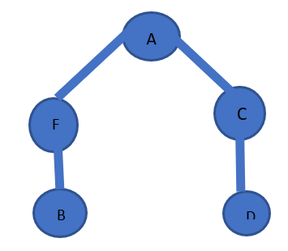
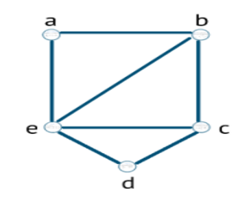

Es la cantidad de aristas que se dirigen hacia un mismo vértice.
Es una trayectoria que contiene todas las aristas de un grafo, recorre una arista solo una vez, unas condiciones son debe ser conexo y exactamente dos vértices deben ser grado par y el resto de grado impar.
4,3,0,1,2,0
A diferencia de la ruta este empieza y termina en el mismo vértice, algunas condiciones es que debe de ser conexo y los vértices tienen que ser de grado par.
1,2,0,4,3,0,1
0,3,4,0,2,1,0
4,3,0,1,2,0,4
Es un camino de un grafo, una sucesión de aristas adyacentes, que visita todos los vértices del grafo una sola vez.
Si además el último vértice visitado es adyacente al primero, el camino es un ciclo hamiltoniano.
Camino hamiltoniano
B, F, A, C, D
Ciclo hamiltoniano
a, b, c, d, e, a
En teoría de grafos, la coloración de grafos es un caso especial de etiquetado de grafos; es una asignación de etiquetas llamadas colores a elementos del grafo. Una coloración de los vértices de un grafo tal que ningún vértice adyacente comparta el mismo color es llamado vértice coloración.